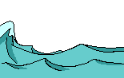

<ion-tabs>
  <ion-tab-bar slot="start">
    <ion-tab-button id="tab1" tab="tab1" href="/tabs/tab1">
      <ion-label>SAN FRANTZISKOKO ANTZINAKO KLAUSTROA</ion-label>
    </ion-tab-button>

    <ion-tab-button id="tab" tab="tab2" href="/tabs/tab2">
      <ion-label>SAN JUAN ARKUA</ion-label>
    </ion-tab-button>

    <ion-tab-button id="tab3" tab="tab3" href="/tabs/tab3">
      <ion-label>ARRANTZALE MUSEOA</ion-label>
    </ion-tab-button>

    <ion-tab-button id="tab4" tab="tab4" href="/tabs/tab4">
      <ion-label>GALERNAREN ESTATUAK</ion-label>
    </ion-tab-button>

    <ion-tab-button id="tab5" tab="tab5" href="/tabs/tab5">
      <ion-label>BERMEOKO PORTUA</ion-label>
    </ion-tab-button>

    <ion-tab-button id="tab61" tab="tab61" href="/tabs/tab61">
      <ion-label>XIXILI</ion-label>
    </ion-tab-button>

    <ion-tab-button id="tab7" tab="tab7" href="/tabs/tab7">
      <ion-label>OLATUA</ion-label>      
    </ion-tab-button>

    <ion-tab-button tab="" disabled routerLink="">   
    </ion-tab-button>

    <div class="image-container">
      
    </div>
  </ion-tab-bar>
</ion-tabs>
